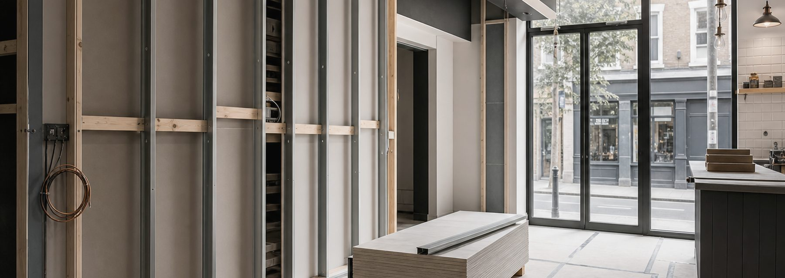
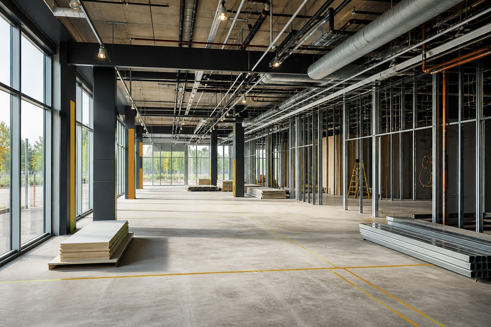
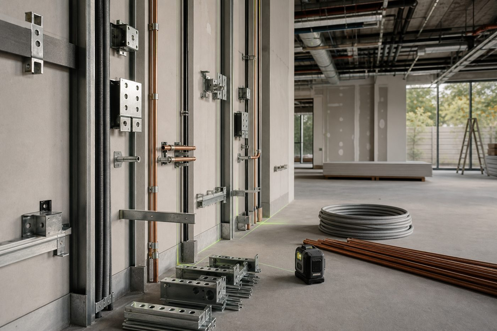
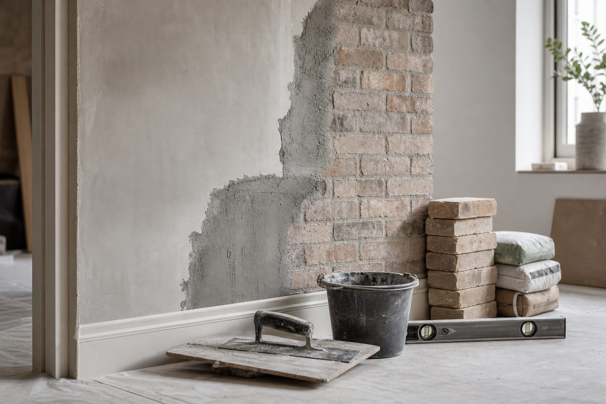
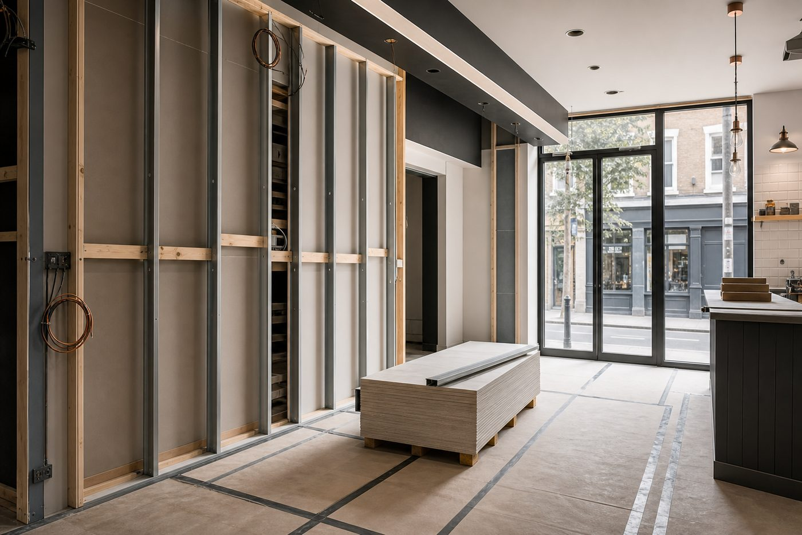

Real Estate & Property Operation
Support for owned or leased property assets, tenant-ready spaces, occupation planning, sale preparation and practical property improvement decisions.

Services shaped around real estate readiness, owned or leased property operation, domestic building, completion, finishing and specialist construction tasks.
Choose AATS when the project needs real estate thinking, practical construction support, finish-aware delivery and property readiness beyond the last day on site.
Support for owned or leased property assets, tenant-ready spaces, occupation planning, sale preparation and practical property improvement decisions.

Residential construction support for home improvements, plot preparation, layout changes, staged build work and practical development planning.

Internal completion, fit-ready surfaces, finishing details, final adjustments and snag-focused activity before occupation or handover.

Focused construction activity where access, sequencing, structural preparation or unusual site conditions need more careful coordination.

AATS can communicate its services around property use as well as build delivery. That matters when a domestic or mixed property is being prepared for occupation, ownership, letting, sale or continued operation under a lease.
The activities are broad, so the site now gives visitors clearer examples of property-led work AATS is positioned to discuss.
The process keeps the project connected to the property outcome, whether the end use is living, letting, operating or selling.
Clarify whether it is a home, leased asset, owned property, active site or space being prepared for tenants.
Separate letting readiness, occupation, sale, domestic construction, finishing and specialist works so the scope is clear.
Review constraints, working order, material timing, safety expectations and other contractors on site.
Complete the work with the final property use in mind, from occupation to leasing or ongoing operation.
Include photos, measurements, property use, site address and whether the space is for tenants, owners, sale, lease or ongoing operation.